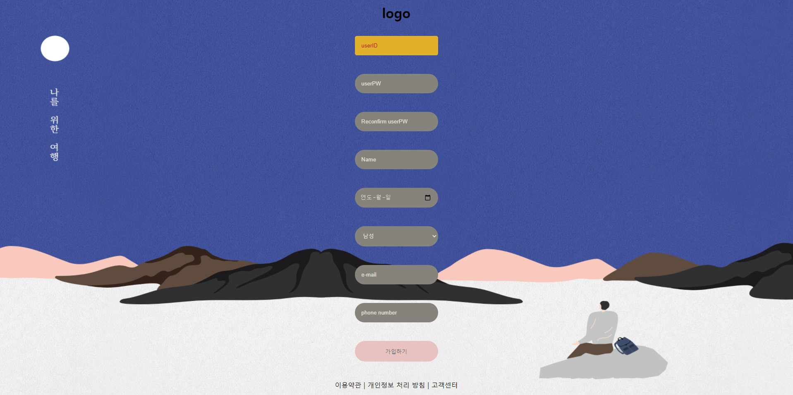

M.I.M | 2021.05.03.00:57
개인 작업의 첫 번째 신호탄으로 만든 내 첫 Self-Made page다.
보다시피 로그인을 할 수 있는 페이지를 만들었고, html과 css로 뼈대와 디자인만 만들어놓은 페이지다.
로그인 기능의 구현은 지금 공부 중인 javascript와 python으로 추후 만든 다음 추가할 생각이다.
로그인 페이지를 만들다 보니 회원가입 페이지도 만들어보자는 생각에서 만들게된 페이지다.
양식과 디자인도 로그인 페이지와 한 끗 차이였기 때문에 만드는데 큰 어려움은 없었다.
두 페이지를 만들 때 css의 transform과 transition 이라는 기능을 많이 사용했다.
두 번째 개인 작업으로는 블로그 페이지를 만들어봤고, 이 페이지 역시 내 Self-Made page다.
첫 번째 작업을 하며 모던함과 간결함의 중요성을 많이 깨닫고 느꼈기 때문에 최대한 간결하고자 노력했다.
그리고 뷰포트 왼쪽에 gif이미지 파일을 fixed상태로 지정해서 활동적인 느낌도 기져가고자 했다.
내 개인 웹 작업과 웹 공부내용을 업로드하는 깃 허브 레파지토리다.
지금은 두 개의 웹 작업물 밖에 없지만, 쉬지않고 새로운 웹을 만들고 다양한 시도를 하고 성공시킬 것이다.
다음 작업은 친구가 만든 게임을 소개 하는 게임소개 페이지를 만들 계획 중에 있다.